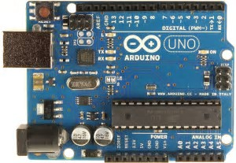
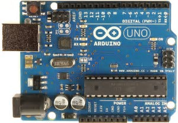

This is the final project in this class. My partner Jose M. made a MP3 player. THe LCD will display what song is playing and the LED with show you the beat of the song. The buzzer is being used as a speaker. The button is being used for a skip button. All of the wiring is confusing, but it works.


 
